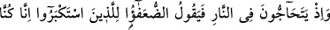
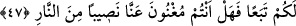
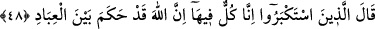

Allahım! Cümlemize hayırlı ve güzel âkıbetler ihsân eyle.
47. (Kâfirler) ateşin içinde birbirleriyle çekişirlerken zayıf olanlar, o büyüklük
taslayanlara: Biz size uymuştuk. Şimdi ateşin birazını bizden savabilir misiniz?
derler.
“(Kâfirler) ateşin içinde birbirleriyle çekişirlerken…” “Ey Muhammed! İster
Firavun âilesinden olsun ister başka biri olsun bütün cehennemliklerin ateşte
çekişecekleri vakti kavmine hatırlat!”
Daha sonra nasıl çekişeceklerini şöyle anlatıyor:
Dünyadaki kadr ü kıymetleri, makam ve mevkileri bakımından daha “zayıflar,” yâni
çaresiz ve ezilenler, “büyüklük taslayanlara,” yâni haksız yere kendilerini büyük
gösterenlere: Doğrusu, “biz size uymuştuk.” Her konuda, özellikle de bizleri dâvet
ettiğiniz şirk ve tekzipte size tâbi idik. Bunlar, onların başkanları ve önderleridir. Dikkat
edilirse âyette “büyüklük taslayanlara” denmiş, “büyüklerine” denmemiştir. Çünkü
gerçek mânâda “büyüklük” bunların sıfatı değildir.
Yani, bizim cehenneme girmemizin sebebi siz oldunuz. “Şimdi ateşin birazını” onu
başka tarafa yönlendirerek “bizden savabilir misiniz? derler.” “Nasîb,” Müfredât’ta
da geçtiği üzere, “belirlenmiş pay” demektir. Yâni size ittibâ etmiş olduğumuz için,
bizden, azâbın bir payını, bir parçasını veya bir kısmını kaldırabilir misiniz?
Biliyorsunuz dünyada biz sizleri hep savunup duruyorduk.
48. O büyüklük taslayanlar ise: Doğrusu hepimiz bunun içindeyiz. Şüphe yok ki
Allah kulları arasında vereceği hükmü verdi, derler.
“O büyüklük taslayanlar,” bu sözlere karşılık “doğrusu hepimiz,” bizler de sizler de
“bunun,” ateşin “içindeyiz.” Size nasıl faydamız olsun, böyle bir şeye gücümüz yetse
kendimize bir faydamız olurdu. “Şüphe yok ki Allah kulları arasında” her birinin
mâhiyetine göre “vereceği hükmü verdi.” Müminleri, derecelerindeki farklılığa göre
cennete; kâfirleri ise farklı farklı derekelerde olmak üzere, cehenneme attı. Artık O’nun
hükmü üzerinde herhangi bir değişiklik yapacak da yoktur “derler.”